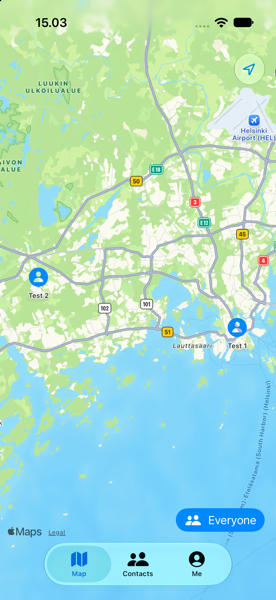
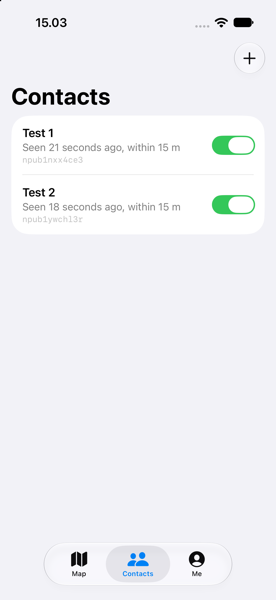
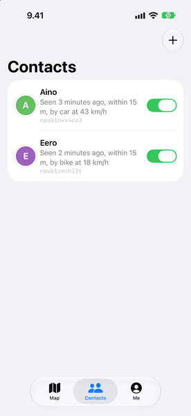
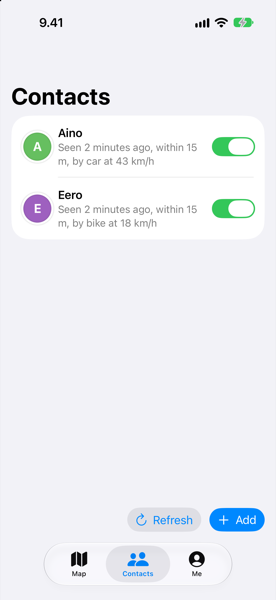
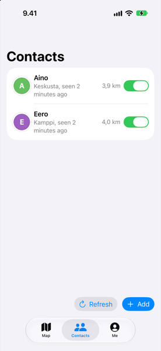
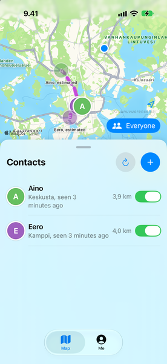
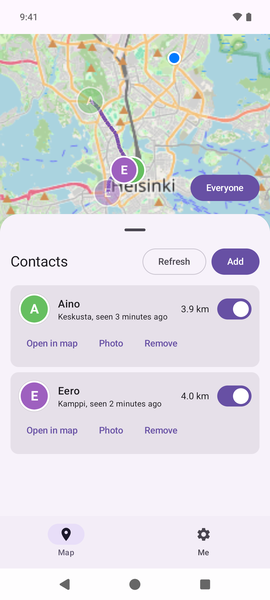

Mismeet: contacts on the map
Mismeet is my location-sharing app in the style of Apple's Find My, built on Nostr for iOS and Android: each phone sends its location to relays, encrypted for each friend it shares with, and there is no server of its own. This case study follows its contact list from 23 to 27 October 2026, when it moved from a tab of its own onto the map.
The problem
In the first version, the map and the people on it were two tabs apart. The Map tab showed where everyone was. The Contacts tab listed them with lines like "Seen 21 seconds ago, within 15 m" and the start of each one's npub, a Nostr key that means nothing to a friend. To find out where one person was, you read their name on one tab and looked for it on the other. The list said when and how precisely someone was last seen, but not where, and Add sat in the top corner of the screen.


My role
I decide what Mismeet does and how it looks, and I try the builds on my own phones. Claude Code writes the code from my prompts. Every commit carries the prompts behind it, collected in PROMPTS.md, so each change below can be traced to my own words. Where Claude Code offered options, such as where district names come from, I picked one.
How I got to the solution
My reference was Find My. I took screenshots of it on my iPhone and changed one thing at a time. From 25 October, each change went out the same day as a test build on TestFlight and on Google Play's closed test.
- 23 October: each person got a photo or an initial, and the list guessed how they travelled from their speed and the roads: "by car at 43 km/h".
- 25 October: the npub left the list, the app followed dark mode, and the map opened on the people in my own country, with an Everyone button for the rest.
- 26 October: Refresh and Add moved from the top of the screen to the bottom. In Steven Hoober's observations of 780 people touching their phones, 49% held the phone in one hand and tapped with the thumb.
- 26 October: each row started saying where: the district, such as Kumpula rather than Helsinki, and my distance to the person, as Find My does. A tap on a row opens the map on that person.
- 27 October: I heard that the text on the Android map was too small to read. The map tiles were drawn at their raw pixel size, and now they scale with the screen. The same day the list became a sheet over the map, as in Find My, and the Contacts tab went away. Refresh and Add moved into the sheet's header, at the bottom of the screen while the sheet is down.



How it solved the problem
One screen now answers where everyone is: the map on top, the list under it, and for each person the place, the time and the distance. Three tabs became two, Map and Me. Looking back, the changes follow three of Nielsen's usability heuristics: recognition rather than recall, since nobody carries a name from one tab to another; aesthetic and minimalist design, since the key, the speed and the accuracy left the list; and consistency and standards, since the layout follows Find My.


What I dropped
- The travel guesses. I added "by car at 43 km/h" on 23 October and took it off the list three days later, along with "within 15 m". The speed still moves a person's estimated position along the road on the map.
- The phones' own geocoders for the district names. They would have sent each friend's exact position to Apple or Google, and GrapheneOS has none. The names come from OpenStreetMap instead, downloaded for whole squares of the map, so the server learns areas and not positions.
- The Contacts tab.
What changed for users
I have not measured it yet. Mismeet is in a closed test on Google Play and on TestFlight, and the outside feedback I have, the small text on the Android map, led to the last change.
What I learned
Copying a pattern people already know, Find My, settled more questions than ideas of my own did.